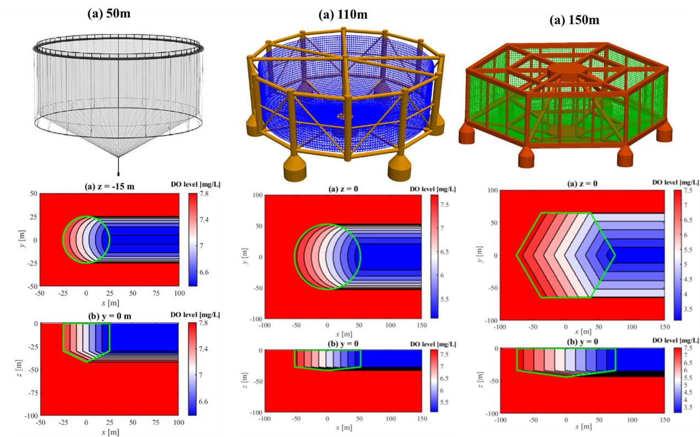

Comparative analysis of dissolved oxygen distribution in three ocean-based fish cages based on measured metocean data

Abstract
Offshore aquaculture is increasingly viewed as a promising alternative to nearshore farming under the pressure of global warming. However, large cages in offshore areas can cause dissolved oxygen (DO) deficiency at low current speeds and limited water exchange in large, high-biomass cages, which adversely affect the fish's health and growth. To evaluate the DO deficiency in sea cages, this study presents a novel, efficient theoretical model that achieves accuracy comparable to computational fluid dynamics (CFD) methods in predicting DO distribution in three typical ocean-based fish cages. Using measured metocean data from the offshore aquaculture area Norskerenna Sør, the DO levels inside and around the cages under extreme environmental conditions are estimated. Assuming a uniform fish distribution, the stocking density limits and maximum allowable biomass (MAB) are evaluated. Results show that the 50 m diameter cage maintains DO above the hypoxic threshold (6 mg/L) at the maximum allowable stocking density of 25 kg/m³. In contrast, the 105 m and 150 m diameter cages experience hypoxic regions covering approximately 22 % and 48 % of the cage volume, respectively. To prevent hypoxia, stocking densities must be reduced to 16.5 kg/m³ and 9.55 kg/m³. The model is used to perform a sensitivity analysis of current speed and stocking density to study the conditions under which hypoxia may occur. Additionally, the diminishing growth rate of MAB with increasing cage diameter highlights the need for optimized cage sizing, rather than simply scaling up cage dimensions. The present model can serve as an efficient tool for assessing hypoxia risk in fish cages under a range of environmental conditions during the early design stages.
Read the published article ↗Abstract reproduced from Wen et al. (2026), Aquaculture, under CC BY 4.0. Scientific units are displayed using superscript characters.